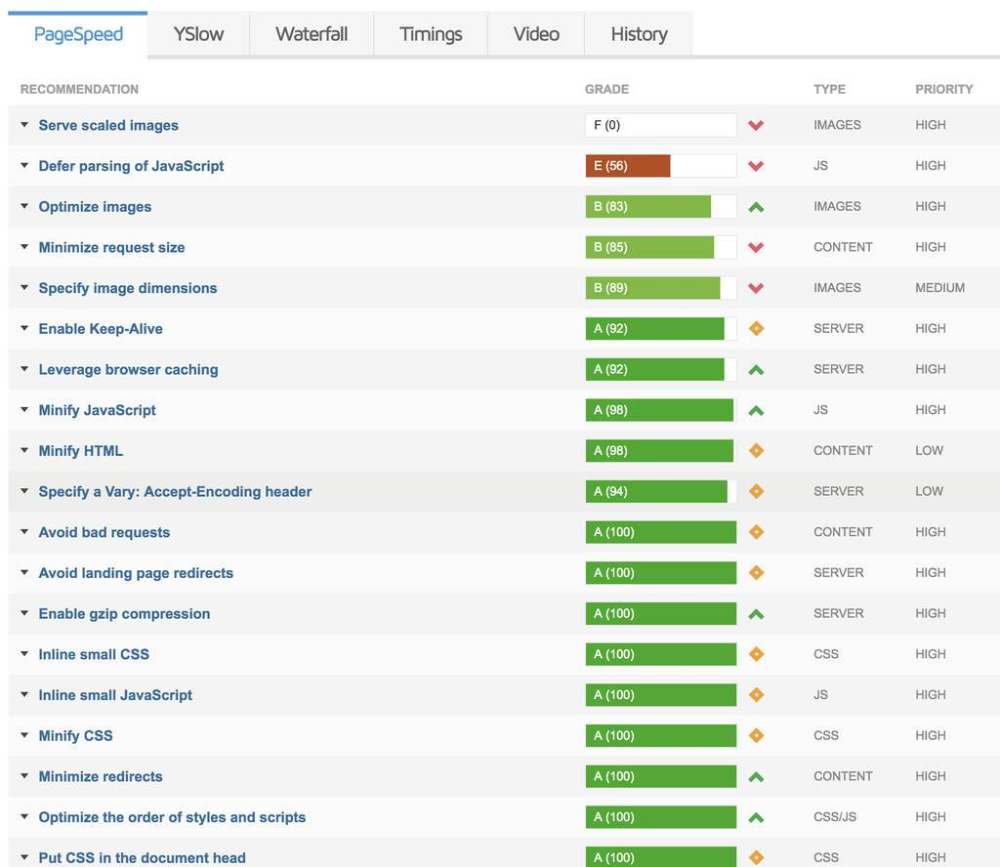
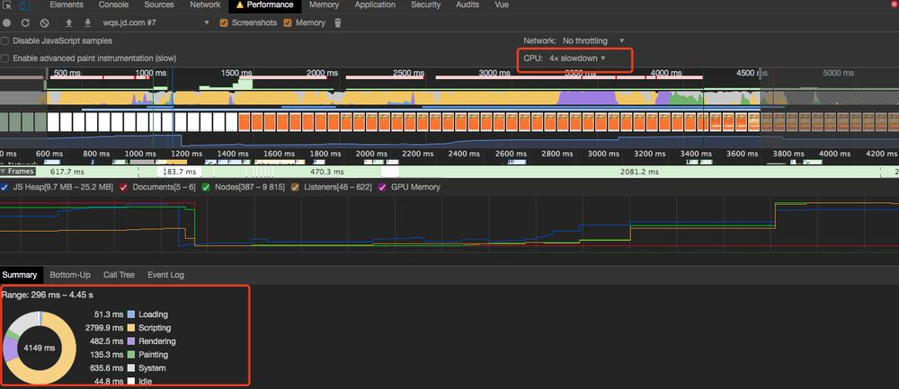
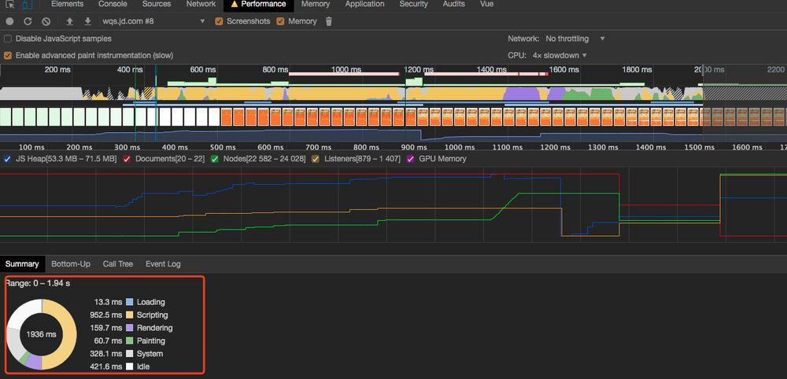

618会场开发总结
设计
- 提前控制风险
电商的会场开发中，基本都会涉及到抢券，秒杀等高风险活动，一旦代码逻辑出现问题，会引发严重后果。所以，前期的代码设计要考虑到风险控制这一层面。 在安排开发计划时，提前给奖券开发预留更多的时间用于自测和代码检查。
程序的每一个逻辑分支，会产生什么结果，即便自己的程序按正常情况没有问题，万一运营或其他人员配置出现错误，有没有开关做到可控，有没有最大数量限制，类似的异常场景都要顺着代码逻辑走一遍。风险在设计过程中就要充分考虑，否则线上出现问题真是🍐鸭梨山大，心理到生理都扛不住。 所以，珍爱生命，提前控制风险。
- 上游发现并解决问题，设计时间大于编程/测试时间
通常，软件设计中正确的时间安排是设计时间> 开发时间，之前在校学习时要求的软件设计时间甚至占到80%。 但在互联网行业，往往需求变更非常频繁，版本迭代很快，尤其在做业务需求时， 前面的要求总不能做到，因为现实情况中经常碰到紧急且开发周期短的需求，还要考虑到开发过程中存在跨组沟通合作，依赖资源更改等不可控的情况，很多时候就着急忙慌的开发了。
不过事实证明，提前进行上游控制的开发质量远高于后验补救。质量差的程序即便上线没有出问题，也可能在开发后期发现大比例代码需要返工，那就会延期了。
开发
CSS布局/适配/兼容
流式排版的字号适配
由于目前市场存在太多各种屏幕尺寸和分辨率的设备，导致我们在开发时不得不考虑要适配所有的机型。比如这次618会场的设计，页面上方主banner区域中要加一个按钮，这里显然要求区域要适应图片的长宽比不变，并且按钮在区域中的位置和大小也要随着屏幕尺寸的不同而变化。 这都比较好解决，把这块区域改成自适应的效果就好， 但是字号大小的设置真的是很棘手的事情。很多情况，简单暴力的给font-size赋值rem就没了，主流机型看不出问题，但剩余的用户看这个页面体验就非常差了。
比如下方模拟了从iPhone5 到 iPad屏幕大小变化的效果：
要实现字体适配不同的屏幕，媒体查询也可以做到，但尺寸太多种，写起来也是很烦躁，并且拖动屏幕改变视窗大小还会出现跳跃的情况。虽然对于移动端开发跳跃并不是问题，但我们更喜欢简洁美观的优雅代码。
现在流式排版对font-size设置已经有一些方案，各有利弊，目前个人觉得比较好的一种是： CSS锁定流式排版
CSS锁定流式排版的原理：


我们可以定义最大最小字体，最大最小屏幕宽度四个变量， font-size的计算方法如下：
font-size: calc( #{$min_font}rem + (#{$max_font} - #{$min_font}) * ( (100vw - #{$min_width}px) / ( #{$max_width} - #{$min_width}) ));
calc函数真的是个好东西，本来要各种仔细计算的用calc就搞定了。
用上述方案对页面做全局配置，效果可见下方DEMO：
整体font-size还是可以沿用之前的方法，html整体加上：
1 | html { |
然后所有的字体font-size可以用rem为单位， 1rem为16px, 在浏览器拖动页面，全局的字体都可以适配了，并且不会出现大小跳跃，看起来效果比较完美了。
iPhoneX的适配
交付测试前需注意兼容性问题自测，iphoneX不用说默认就要加上，这里有些经验记录一下：
- 查询主流设备各项参数的网站： https://vizdevices.yesviz.com/viewport.php
顶部通栏
普通 iPhone 有 128px 的工具栏区域，而 iPhone X 有 176px 的工具栏区域，
Android 有 136px 的工具栏区域。
设计通顶效果页面时，顶部最少预留 136px 的纯色或者无主要内容区域
底部虚拟指示条
吸底 Bar 实际一样是始终悬浮固定在屏幕底部，需要留足空间
设备安全区域
设备安全区域是iOS11为屏幕适配引入的概念，指屏幕内适合放置控件的安全区域

注意iPhone X等刘海机的适配，iOS 11中的WebKit包含了新CSS函数constant()和四个safe-area-inset-left, safe-area-inset-right, safe-area-inset-top和 safe-area-inset-bottom常量。
iPhonX适配步骤
- 步骤1
HTML添加
1 | <meta name="viewport" content="width=device-width, viewport-fit=cover"> |
- 步骤2
添加constant()函数：
1 | body { |
横竖屏操作时比较难设置合理的padding值，可以使用max和min函数来操作，比如这样子：
1 | .test { |
- 步骤3
1 | @media only screen and (device-width: 375px) and (device-height: 812px) and (-webkit-device-pixel-ratio: 3) { |
1 | :root{ |
框架及其他问题
v-for的key
v-for一般情况都要记得加上key，这并不是绝对的，有些情况下不加key没什么影响，但有些情况不加key不仅效率有影响，甚至会出现bug。先来下下面的两个没有加key的🌰栗子：
🌰1:
运行代码上述，发现输入框中输入了数字之后，点击打乱顺序按钮，商品列表的位置被打乱了，但是input输入框的值居然没有跟着变。 加上v-model之后是正常的，运行结果如下。
🌰2:
上面的html代码中加上Vue的transition动画效果，发现商品列表消失了
加上key之后则正常显示，也可以看到动画效果：
文档的解释 ：
Vue使用 v-for 渲染的元素列表时，默认使用“就地更新”的策略。如果数据项的顺序被改变，Vue 将不会移动 DOM 元素来匹配数据项的顺序，而是就地更新每个元素，并且确保它们在每个索引位置正确渲染。key属性可以给Vue一个提示，这样现有的元素可以高效被重用和排序。
深入分析： Vue的Diff算法中，新旧Vnode进行对比，二者为sameNode的情况下会进行pathNode，而判断sameNode的方法中用到了key：
1 | function sameVnode (a, b) { |
同时未定义的情况二者的key均为undefined，判断为sameNode的情况会进行pathNode，新老节点均有children子节点的情况会调用updateChildren方法，具体可参见源码，重点说一下用到key的过程，如下图：
updateChildren方法中头尾交叉对比互不相同的情况，调用createKeyToOldIdx方法创建一个oldVnode的map，用newStartVnode（虚拟Dom同层头部节点）的key对比创建的map的key，找到相同key的sameNode。
如果newStartVnode没有key，那需要遍历整个map寻找sameNode，有key的情况就可以直接通过map找到对应的sameNode进行patch了。
用到key也并不是一定必要的，某些特别简单的列表渲染就地渲染的效率可能更高，不过大部分情况还是尽可能在v-for的情况下使用key。
iOS的偶现白屏
iOS来回跳转多次，偶现页面白屏，触屏又出现的问题，但dom元素和绑定事件存在，恢复问题代码，但出现频率降低，难以复现找到真实原因。推测与iOS的webview的底层渲染有关，很多人反馈类似问题，可能因为页面滚动后没有正常的调用 WKWebView 的 _updateVisibleContentRects 方法刷新需要渲染的内容导致
解决方法
- 强制设置高度撑开某些情况下可能解决问题
- 如果上述方法没有作用，需要关注内存使用，规范使用框架
Vue的动态组件
开发中碰到配置很多楼层，但这些楼层有不同的样式和逻辑的需求，需要建立不同的楼层组件满足业务需求。 一个组件可对应一个或多个楼层，并且所有楼层需要灵活安放位置，可由运营排序。
解决方法 ：
Vue的动态组件非常好用，我们可以给每个楼层组件一个不同的key值，先把list做排序，然后利用v-bind:is属性绑定，可以在代码量比较少的情况下完成上述功能，如下：
1 | <div class="tabfloor" v-for="(tabFloor, index) in tabList" :key="index"> |
对比繁琐的写法(这里有商品楼层有十几种组件)：
1 | <div class="tabfloor" v-for="(tabFloor, index) in tabList" :key="index"> |
Vue的单向数据流
注意vue的单向数据流，规范写法。 很多提示vue warn的情况是由于没有遵循合理的规范，父组件注入子组件的数据最好不要直接修改，这里可以在子组件中重新设置data
v-for和v-if
v-for和v-if尽量不要一起使用
vue的transition组件
跑马灯的效果可以使用vue的transition组件
文档：https://cn.vuejs.org/v2/api/#transition
1 | <transition class="marquee-list-container" name="marquee" mode="out-in"> |
css部分：
1 | .marquee-enter-active, |
性能优化
FPS
FPS(Frame Per Second)刷新率是最能反应页面性能的指标，代表每秒传输的帧数。衡量页面的卡顿程度可以通过下表看到：
| FPS | 卡顿程度 |
|---|---|
| > 60 | 非常流畅 |
| 30 ～ 60 | 无卡顿 |
| 12 ～ 30 | 卡顿 |
| < 12 | 非常卡顿 |
618会场的FPS测试，滚动时fps在50～60之间，比较流畅。
Load过程中，可以通过performance观察FPS情况，1S内页面需要做许多工作，还可能有耗时的DOM操作，会丢失很多帧。所以下图中可以看到，前1s的FPS有一段红色的线，出现红色的线代表FPS值较低，页面性能也比较低。 之后是一条绿色的长线是正常的了。 也可以看到，页面还有一部分优化空间，红色的线应该降低到1S内。

可以从以下角度去优化这部分性能：

首屏加载时间
整体页面发现首屏加载比较慢，需要优化。
1. 过大JSON对象的处理
使用Chrome的performance功能，CPU调整到4x倍速，加载略慢的情况可以看到详细的首屏加载信息。

对比发现，script的时间占比太多，页面解析js的时间造成了整体渲染阻塞。查了下原因，是由于运营配置的静态数据过大造成。所以这里替换了首次请求页面片，使用接口请求去拿数据，script的时间明显减少：


问题解决了，但这也很让人疑惑，为了减少首屏的请求数量，我们选择先把后面代码要用到的配置文件中的json数据，直接生成到html的script标签中，但是在此次的开发中，这种方式反而让性能降低了。查找了一些资料，发现原因有两个：
解析JSON.parse 方法相比 解析JavaScript 对象字面量会快得多
将普通对象字面量用于大量数据时可能被解析两次：
字面量预解析时是第一次。
字面量被懒解析时是第二次。
对于第一点：我们 用字面量对象来表示大型的json数据并放置在scrit标签中，解析是非常慢的。比如下面两种写法，使用JSON.parse后性能会明显提升：
1 |
|

在大部分浏览器的js引擎中，使用json.parse的速度要明显优于直接使用对象字面量。
对于第二点： 我的理解是，为防止页面启动时分配大量内存导致内存飙升，解析对象时会先解析对象层级浅的一层和被会被用到的一层，其他暂不使用的属性，再进行第二次懒解析。 原理应该类似于PIFE，可详见这篇文章：
综上，对于大于10KB的JSON对象，最好避免在页面冷启动时进行解析。
2. 返回锚点位置的分页数据加载
用户点击商品跳转后，再返回页面，出于对体验优化的考虑，一般比较长的特别是很多分页的页面，我们会加上返回锚点定位的功能。
但如果用户已经浏览了很多页，返回页面时如果要重新加载每页的数据，那就太慢啦。 所以这种情况，可以在请求接口时加上缓存功能，设置大概5min 的缓存时间，如果在此时间内可以直接去取缓存数据。
需求及体验
问题及解决方案
开发中思维局限于技术实现，对用户体验没有多关注，造成因体验问题不好上线后返工修改。本次开发中也出现了只关注开发完成情况，点击领券后没有再次查询状态打标已领取的问题，这样会导致用户多一次操作，体验不够好。
解决方法 ：
- 开发中每一个环节多思考一步，从用户角度看还缺少什么逻辑
- 多体验其他页面，总结普遍的体验要求
- 学会提问，主动了解需求背景，否则可能出现两种情况：
（1）产品文档不列出细节的情况，认为冰山一角的需求是开发的全部工作量（本次碰到）
（2）实际用户只想要个馒头，却按照需求开发了满汉全席
产品设计需要技术敏感度，否则类似组件也难以复用，与可复用方案相比，达到同样的产品体验效果，开发成本增大很多
解决方法 ：
- 开发在需求沟通中也需提供技术上的意见
- 减少从用户角度看没有实际区别但表现形式不同导致开发量增大的楼层
开发过程中需求添加、以及频繁性变动比较严重，有限开发时间内导致交付质量差
解决方法 ：
- 重要需求的必要变更开发往往不能拒绝，这里开发很弱势暂时无解
- 务必提前确定需求到底想要什么，涉及到要用的资源务必提前定好
规范的PRD文档，交互稿和设计稿的细节程度与沟通成本大小成反比关系，不规范缺少细节的PRD文档会导致沟通成本极大。 PRD生成了图片交付，需求变更存在口头沟通没有更新到文档。 需求变更点与开始的prd分开两张图片，查找和沟通成本极高。
解决方法 ：
- 规范PRD文档， 文档需支持可编辑
- 需求细节应该描述清楚
- 项目需要有一个产品经理
- 一个比较好的标准化产品需求文档系列推荐： http://www.woshipm.com/pmd/964608.html